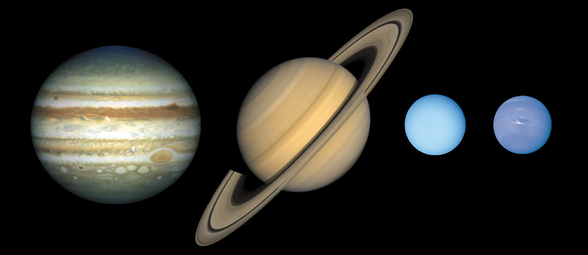

What is a Gas Giant?
A gas giant is a type of planet that is primarily composed of hydrogen and helium, with smaller amounts of other elements such as methane, ammonia, and water vapor. These planets are known for their large size and low density compared to terrestrial planets like Earth. Gas giants lack a solid surface and instead consist of layers of gas surrounding a dense core, which may be made up of rock, ice, and metals. The four gas giants in our solar system are Jupiter, Saturn, Uranus, and Neptune. These planets are located beyond the asteroid belt, in the outer regions of the solar system. Gas giants are distinct from terrestrial planets like Earth, Mercury, Venus, and Mars, which have solid surfaces and are composed primarily of rock and metal.

A Gas Giant Structure
The interior of a gas giant is primarily composed of hydrogen and helium, with some other elements mixed in smaller quantities. The exact composition and structure of a gas giant's interior can vary depending on factors such as its mass, age, and distance from its parent star. However, there are some general characteristics that are believed to be common among gas giants:
- Core: Gas giants are thought to have a solid core at their centers, although the core may not necessarily be completely solid. This core is likely composed of heavier elements such as rock, metal, and ices. The core's size can vary among gas giants; it is believed to be relatively small compared to the overall size of the planet.
- Envelope: Surrounding the core is a thick layer of hydrogen and helium gas. This layer makes up the majority of the planet's mass and volume. The gas in this layer is under extreme pressure due to the gravitational forces acting on it, causing it to be in a dense and compressed state.
- Atmosphere: Above the hydrogen and helium envelope lies the atmosphere, which consists of various gases including hydrogen, helium, methane, ammonia, and water vapor. The atmosphere extends outward from the planet's surface into space and is responsible for the planet's visible features, such as cloud bands, storms, and atmospheric dynamics.
The specific details of a gas giant's interior, such as the distribution of materials, the presence of layers, and the behavior of gases under extreme pressures and temperatures, are still the subject of ongoing scientific research and exploration.
Gas Giant's Appearance
Gas giants can appear different from one another due to several factors, including their atmospheric composition, internal structure, and environmental conditions. Here are some key reasons why gas giants may look different:
- Atmospheric Composition: The composition of a gas giant's atmosphere, including the presence of various gases such as hydrogen, helium, methane, ammonia, and water vapor, can greatly influence its appearance. Different gases can give rise to distinct colors and cloud formations within the atmosphere. For example, Jupiter's prominent bands and swirls are primarily composed of ammonia and other compounds, giving it its characteristic banded appearance, while Saturn's atmosphere contains more ammonia and methane, resulting in a paler appearance.
- Internal Heat: Gas giants generate heat internally through gravitational contraction and leftover heat from their formation. This internal heat can drive atmospheric processes such as convection, which affects cloud patterns and dynamics. Variations in internal heat can lead to differences in atmospheric circulation and cloud formation, contributing to the distinct appearances of gas giants.
- Moons and Rings: Gas giants may have moons and ring systems that can also influence their appearance. Moons can interact gravitationally with the planet's atmosphere, causing tidal forces and generating features such as auroras and atmospheric disturbances. Additionally, ring systems can cast shadows on the planet's surface and interact with its magnetosphere, affecting its appearance from space.
- Weather Systems: Gas giants exhibit complex weather systems driven by atmospheric dynamics, including jet streams, storms, and atmospheric waves. Variations in weather patterns and atmospheric phenomena can contribute to the diverse appearances of gas giants observed by spacecraft and telescopes.
Overall, the combination of atmospheric composition, internal heat, gravitational interactions with moons and rings, and atmospheric dynamics contributes to the unique and varied appearances of gas giants in our solar system and beyond.